Erythritol at 13.2 °C
TabPFN correction: −0.0553 log units
Background & problem definition
Regression task

Drug SMILES, solvent SMILES and temperature enter the model. The output is log molar solubility.
Temperature uses the °C definition in v2.
Predict solubility to prioritise solvent screening and crystallisation experiments.
Prediction model


217 descriptors per molecule, temperature, products and differences: 869 inputs.
Inverse-count weights give each parent the same total weight.
Inner-fold predictions select the weights. The deployed blend uses 75% ExtraTrees + 25% TabPFN.
Physics-guided decomposition


Backup B
44 pair features in zc, temperature scaled by training median and IQR. Fit weighted ridge on centred pairs (λ = 1,000). Inner folds choose gain from {0, 0.1, 0.3, 1.0} and tree depth from {8, 16, unlimited}.

Inverse-count weights give each parent equal influence on weighted variance reduction.
Inner OOF chooses α from {0, 0.25, 0.50, 0.75, 1.0} by parent MAE.
217 + 217 molecular descriptors, one temperature, and two 217-element interaction blocks.